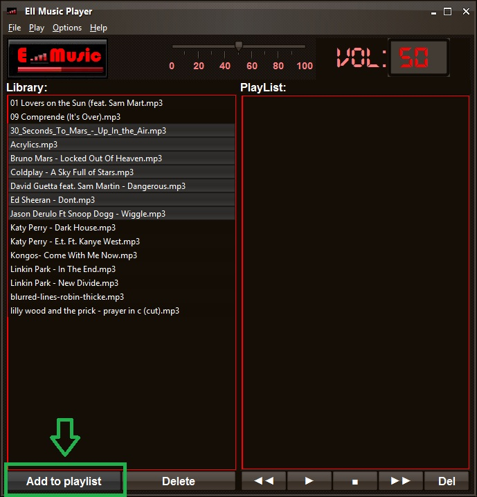

EII Music Player
Para reproducir música en el EII Music Player, tenemos que añadir canciones de nuestra libreria a la lista de reproduccion.
Para ello seleccionamos las canciones que queramos reproducir y le damos al boton de "Add to playlist"

Las opciones del reproductor son las siguientes:
- Play: reproduce la cancion seleccionada o la primera cancion de la lista
- Stop: finaliza la reproduccion de una cancion
- Rewind: reproduce la cancion precia a la seleccionada
- Forward: reproduce la cancion posterior a la seleccionada
- Del: elimina la cancion seleccionada